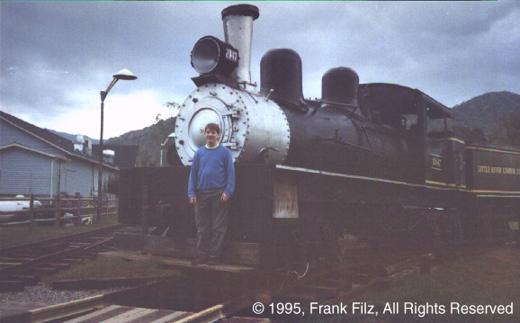

My special interest in trains is logging railroads. I love Shays, Climaxes, and Heislers. These engines are all geared locomotives.
The Shay was the most popular geared locomotive. Shays have two or three vertical cylinders mounted on the side of the engine. These power a driveshaft which runs the length of the engine along the side. Every axle is driven. Between the universal joints in the drive shaft, and the ability of the trucks to swivel, the Shay has a great deal of flexibility which is an advantage when traversing poor temporary track laid through the woods. Another advantage of the Shay over normal rod steam engines is that if a tender is added for additional fuel and water capacity, the truck or trucks on it are also driven. This means that the weight of the fuel and water adds to the tractive ability of the engine.
Heislers have two cylinders in a V2 configuration, driving a center drive shaft. Again, the drive shaft powers all axles, and great flexibility is achieved.
Climaxes have two cylinders mounted diagonally on the side of the engine. They drive a centered drive shaft, similar to the Heisler.

Here I am standing on the front of Little River Co. Shay #2147. This engine is at a museum in Tenessee near Townsend.
Here is the cab of #2147.
Here another view of #2147.
Here is Cass Scenic Railway Shay #3. Cass Scenic Railway is in West Virginia. Trains run to the top of Bald Knob.
Here is Cass Scenic Railway Shay #2 having her cylinders oiled.
Comments to ffilz@mindspring.com
© Copyright 1995, 1999 Frank Filz. All Rights Reserved.
Page last updated November 2, 1999